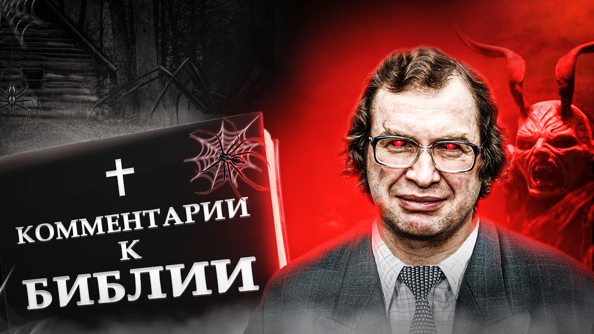

Регистрация в телеграм-боте
Вернуться в раздел "Публицистика Сергея Мавроди"

Сказано в Книге Бытия (1:27–28, 2:7):
«И сотворил Бог человека по образу Своему, по образу Божию сотворил его; мужчину и женщину сотворил их. И благословил их Бог, и сказал им Бог: плодитесь и размножайтесь.
И создал господь Бог человека из праха земного, и вдунул в лицо его дыхание жизни, и стал человек душою живою».
Так были сотворены мы, люди. Сотворены Господом Богом. Но что было дальше?
«И взял Господь Бог человека, которого создал, и поселил его в раю, в саду Едемском. И заповедал Господь Бог человеку, говоря: от всякого дерева в саду ты будешь есть, а от дерева познания добра и зла, не ешь от него, ибо в день, в который ты вкусишь от него, смертью умрешь». Книга Бытия 2:15–17.
И это была самая первая на земле ложь. И вошла она в мир именно через Бога. Считается, что Дьявол — главный лжец. Однако же нет! Первая ложь принадлежит Богу. Как, впрочем, и все в этом мире. Бог — его творец. Всего, что в нем есть, И хорошего, и плохого.
Ибо «сказал змей Еве: нет, не умрете, но знает Бог, что в день, в который вы вкусите их, откроются глаза ваши, и вы будете, как боги, знающие добро и зло».
Люди вкусили от дерева познания добра и зла, и открылись глаза у них, и они стали тем, что они есть сейчас. Стали людьми.
Как мы видим, с самого начала в судьбе человека принимают самое активное участие две силы. Борются за него.
Бог и Люцифер (он же змей, диавол, сатана, дракон, лукавый, вельзевул и пр.).
С одной стороны, Бог есть отец наш, творец, именно Он нас создал, вдохнул в нас жизнь, Ему мы обязаны тем, что мы вообще есть, что мы существуем; но, с другой — если бы не Люцифер, мы до сих пор так и бродили бы нагие в раю. Глупые и счастливые.
Литература и искусство, наука, техника — книги и театр, кино, компьютеры и телевизоры, всё, что мы сегодня видим вокруг, все достижения современной цивилизации — всё это стало возможным только благодаря знанию, а значит, благодаря именно Люциферу. Благодаря тому, что Он убедил в своё время прародительницу нашу Еву нарушить запрет Бога и вкусить от дерева познания.
Создавая нас, Бог вовсе не планировал сделать нас такими, какими мы стали сегодня. Это произошло не согласно, а вопреки Его воле и Его первоначальным замыслам. Благодаря исключительно вмешательству Люцифера.
Иными словами, если Бог — наш физический отец, отец по крови; то Люцифер, несомненно, наш отец духовный. Именно Ему и никому другому обязаны мы тем, что мы сегодня стали именно такими, какими мы стали. И отрекаться от Люцифера, проклинать Его — значит, отрекаться от самих себя. Отрекаться от знания, от прогресса.
Да, собственно, и отречение-то это стало возможным только благодаря опять-таки все тому же Люциферу. Благодаря тому, что мы вкусили плодов от дерева познания и стали способны теперь различать добро и зло. До этого и Бог, и Дьявол были для нас, по всей видимости, одинаково хорошими. Просто частью окружающей нас природы.
Таким образом, получается, что, проклиная Люцифера, мы кусаем руку, которая нас кормит, дает нам знание. Мы обращаем это знание против самого учителя, называя Его злом.
Но дело даже не в этом. Не в морально-этической стороне проблемы. Давайте взглянем на вещи чисто практически и зададим себе наконец совершенно простой и естественный вопрос. Который, тем не менее, все обычно как-то упускают из вида.
А почему, собственно, мы считаем, что Люцифер — это зло? Что плохого Он нам сделал? Да-да! Что?! Хорошее — да, Он дал людям знание, а вот что Он сделал нам плохого? В Библии, между прочим, про это ни слова.
Единственные описанные там деяния Люцифера, это: искушение Евы, испытание Иова, искушение Христа и Апокалипсис. Вот, по сути, и всё.
Ну, об искушениях Христа и Апокалипсисе мы ещё поговорим отдельно, это особая статья, а вот что до всего остального…
Искушение Евы мы уже обсуждали выше, и так ли уж в итоге плохо, что люди все же на него поддались и отведали плодов с дерева познания — решайте сами.
Что же касается испытания Иова, то оно ведь было проведено с согласия Бога. Прямо санкционировано Им.
«И сказал Господь Сатане: вот, все, что у него, в руке твоей, только на него не простирай руки твоей». Книга Иова 1:12.
Это был своего рода спор Бога и Люцифера. Так что это не в счет.
Так что же все-таки плохого, спрашивается, сделал нам Люцифер? Да и вообще, все эти слова, вся эта сугубо негативная терминология: «искушение», «испытание» … — всё это на совести авторов Библии, апологетов Господа Бога. Люцифер же и Бог находятся друг с другом в явной и очевидной оппозиции, они противники, и это следует учитывать.
И если мы хотим беспристрастности и объективности, то и к формулировкам Библии, во всем, что касается Люцифера, следует относиться с крайней осторожностью. Ведь если бы Библию писали апологеты Люцифера, то, вероятно, и поступки Его оценивались бы в ней совершенно иначе. И назывались бы они совершенно по-другому. Равно как и поступки самого Господа Бога.
Истина же, как обычно, посередине. Мы — люди, у нас есть разум, и мы сами можем взвешивать, анализировать и оценивать факты и делать выводы. Свои собственные. А если нет — то, как же мы сможем тогда отличить добро от зла? И чем же мы тогда отличаемся от животных?
С точки зрения же разума, с точки зрения логики и здравого смысла ситуация выглядит так. С точки зрения же разума, с точки зрения логики и здравого смысла ситуация выглядит так.
Есть две силы, которые борются за человека, и каждая предлагает свой путь.
Бог: Я вас создал, дал вам жизнь. Плодитесь и размножайтесь!
А за это вы должны Меня во всем слушаться, стать Моими рабами, рабами божьими.
Люцифер: Человек — не животное, не домашний скот! Нельзя делать из человека раба!
Да, Бог создал человека. Он его отец. Но не вечно дети живут с родителями.
Они вырастают и сами выбирают свой путь.
Бог: Слушайтесь Меня, и Я буду вас кормить. Вы будете жить в раю, без трудов и забот.
Люцифер: Вы будете свободными людьми и сами всё возьмете! Сами всего добьетесь! Без чьей-либо помощи.
Бог: Не мудрствуйте, будьте просты как дети, много знаний — много печали.
Люцифер: Учитесь, познавайте, вникайте! Станьте как боги.
Вот два пути. Какой же из них нам выбрать? Нам, людям?
Все "Комментарии к Библии" Сергея Мавроди в авторском издании по ССЫЛКЕ
Вернуться в раздел "Публицистика Сергея Мавроди"
Регистрация в телеграм-боте